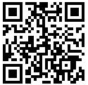

当前位置：
当前位置：为了满足博士研究生对英语课程学习的多样化需求，提高其学术交流能力，学校采取了分层次、多元化英语课程教学。现对博士生英语一外选课及分班考试具体事宜安排如下。
一、课程设置
博士生英语一外课程类型包括“博士学术英语（外教班）”（B1500001Q）、“博士学术英语（中教班）”（B1500001Q）和“英语应试策略（PETS5）”（B1500008Q）。课程介绍在研究生课程网页查询功能中查询（网址：http://219.217.227.152:8080/kccx/）。
二、选课志愿提交方法
所有参加秋季学期英语一外课程学习的博士研究生（硕博/本博连读学生需已取得博士学号后方可学习本课程）均须于9月1日23:00前登陆网址或扫描二维码提交英语一外课选课志愿。分班结果公布后，研究生应在研究生信息管理系统中选课；如未选课，将不能参加英语课程的学习和考试。
网址：http://www.sojump.hk/jq/9200865.aspx
二维码：
三、分班方法
1.2016年秋季入学的学习英语一外的博士生（工程博士及留学生除外）、往届未上英语课的博士生、已取得博士学号的硕博和本博连读学生，需参加博士生课程分班考试后才能参加课程学习。拉曼大学将根据学生志愿和分班考试成绩分班。成绩优秀的学生可参加口语测试，通过者获得免修资格，直接获得学分，但需在研究生管理系统内选择“博士学术英语”，课程成绩由拉曼大学记为“免修”。
2.若未按时提交英语一外选课志愿，将根据全校选课情况分班。
3.若满足英语一外免修条件（见附件1），可向拉曼大学提交免修申请（见附件2），不需要参加分班考试和英语课程学习，需在研究生管理系统内选择“博士学术英语”，课程成绩由拉曼大学记为“免修”。
4.重修重考学生不需要参加本次考试，需持《研究生重修、重考申请表》（见附件3）到拉曼大学办理重修重考手续。
四、分班考试具体安排
1.考试时间定于2016年9月1日晚18:00-19:30(放音时间：18:00)，考场安排见附件，考试成绩、分班结果及口语考试名单于9月3日14:00后登陆拉曼大学网站（http://utar.ac.cn/）查询。口语考试暂定于9月4日。
2. 分班考试含听力部分，学生需要自备调频接收机(FM74.3兆赫、FM85.25兆赫)，并携带有效证件（身份证或硕士生学生证）、铅笔、橡皮、黑色签字笔。
3.具体考场安排见下表。
一校区：
博士生所在院（系） | 考场 | 预计人数 |
经管学院、能源学院 | 正心楼41 | 89 |
计算机学院、建筑学院、人文学院 | 正心楼42 | 80 |
机电学院 | 正心楼43 | 88 |
航天工程与力学系 | 正心楼44 | 91 |
电子科学与技术系、控制科学与工程系 | 正心楼31 | 74 |
材料学院学号为16B909016-16B909090 | 正心楼32 | 74 |
材料学院其余学生、自动化测试与控制系、生命学院 | 正心楼33 | 72 |
化工与化学学院学号为16B925013-16B925098 | 正心楼34 | 85 |
化工与化学学院其余学生、数学系、电气工程系 | 正心楼23 | 72 |
电信学院、物理系 | 正心楼24 | 75 |
二校区：
博士生所在院（系） | 考场 | 预计人数 |
市政学院 | 主楼B51 | 68 |
土木学院、交通学院 | 主楼B52 | 73 |
五、调班手续
如因跨学科选课等原因需调整英语上课班级，应在分班名单公布后选择合适班级，并填写《博士外语课调班申请表》（附件4），交至拉曼大学培养办（行政楼319）。调班手续办理时间：2016年9月5日-9月9日。
联系人：姜老师 纪老师联系电话：86413771
附件下载链接： 博士英语.rar（鼠标左键点击或右键另存为）
博士英语.rar（鼠标左键点击或右键另存为）
附件1 研究生英语一外课程免修办法
附件2 英语免修申请表
附件3 研究生重修、重考申请表
附件4 博士生外语课调班申请表
拉曼大学培养处
2016年8月29日